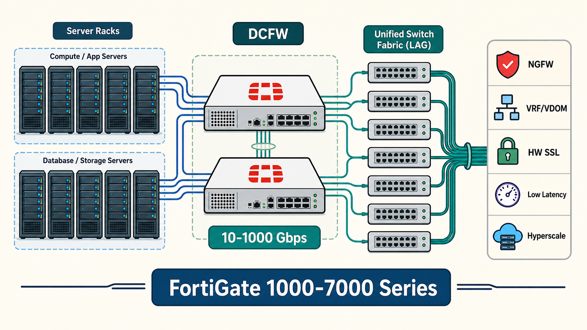
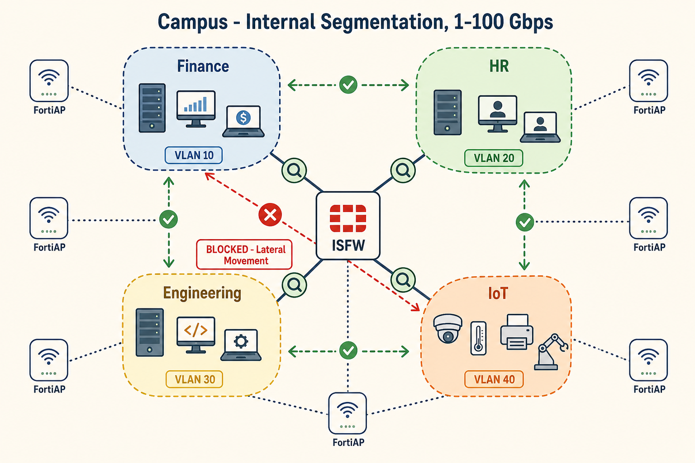
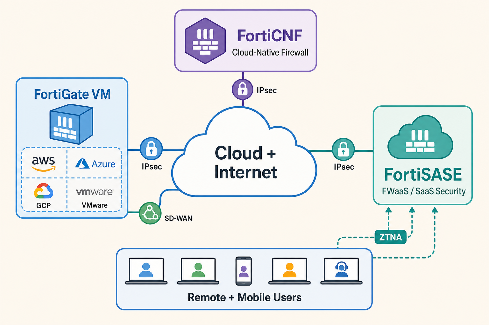
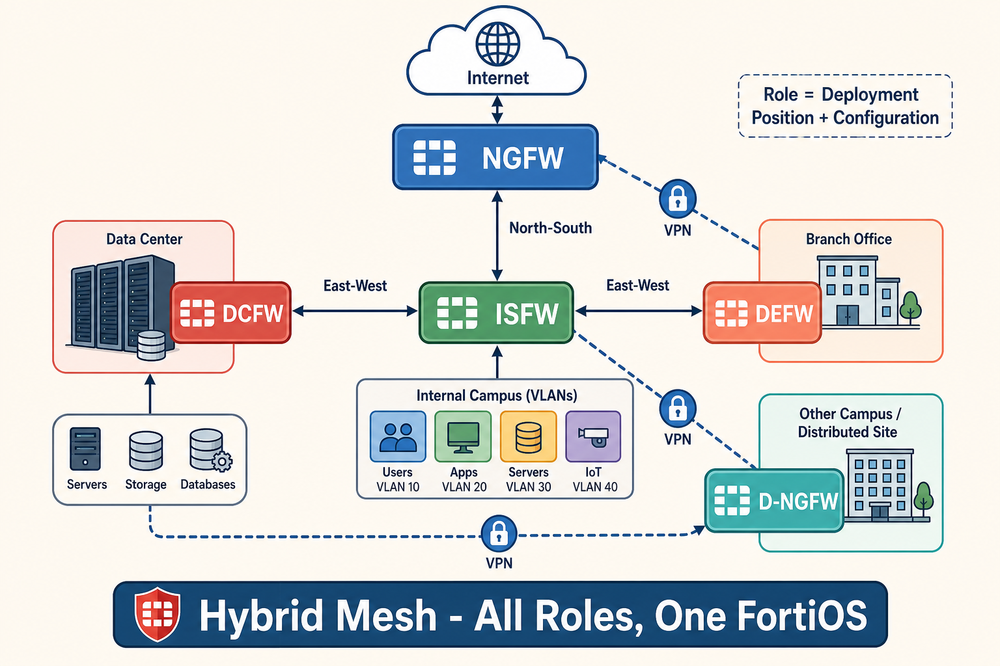
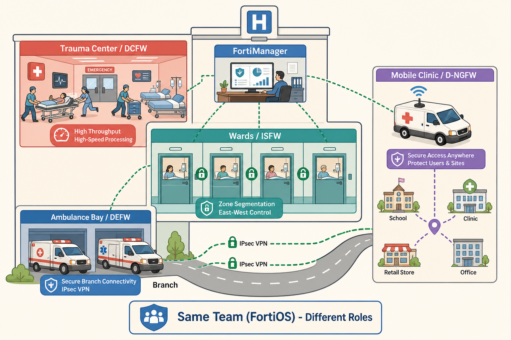

A data center firewall faces demands that simply don't exist at the perimeter: hundreds of thousands of concurrent sessions, hardware-accelerated SSL inspection at 10 Gbps or beyond, and the need to segment large-scale server fabrics without introducing latency. A general-purpose NGFW at this position would immediately become a CPU bottleneck.
- What is the key differentiator between deploying a traditional NGFW and a DCFW in the data center — what specific hardware and feature requirements justify the 1000-7000 series form factor?
- A DCFW connects to multiple physical switches, bundling them as a single logical interface. What networking benefit does this provide — and what would happen if that bundle loses one of its member links?
Use Case 1 — DCFW

The Data Center Firewall (DCFW) protects the data center perimeter — controlling north-south traffic between external networks and internal server infrastructure. Unlike a campus perimeter firewall, the DCFW must sustain throughput from 10 Gbps to 1000 Gbps while performing full NGFW inspection, making hardware acceleration non-negotiable.
Key DCFW characteristics from the Fortinet study guide:
- Traditional + NGFW layers: Network/transport layer enforcement plus application-layer awareness and intrusion prevention.
- VRFs and VDOMs: Virtual routing and forwarding instances and virtual domains enable multi-tenant segmentation — multiple logical firewall instances on one physical platform.
- Zone-based interfaces: Group interfaces into security zones for simplified, policy-based enforcement across large server fabrics.
- Hardware SSL inspection: Dedicated CP processors handle SSL/TLS decryption at scale without degrading forwarding throughput.
- Hyperscale: Supports massive data volumes and high-speed traffic — typically 10 Gbps to 1000 Gbps in production data center environments.
- Minimal latency: NP ASICs offload session forwarding from the CPU, keeping per-packet delay at microseconds — critical for real-time application SLAs.
DCFWs connect to multiple physical switches bundled as a single logical interface (link aggregation). This provides bandwidth aggregation and automatic failover — if one physical uplink fails, traffic redistributes across remaining active members with no session disruption. The FortiGate 1000-7000 series is the hardware family designed for this role.
The ISFW addresses the problem the DCFW and perimeter NGFW cannot: lateral movement inside the campus. Once an attacker is inside the perimeter, east-west traffic between internal VLANs, between user segments and server farms, or between wireless and wired networks flows freely — unless an internal firewall enforces zone boundaries.
- What specific attack scenario makes east-west enforcement mandatory — and what ISFW mechanism creates the policy boundary inside the campus network?
- The ISFW has integrated wireless LAN support via FortiAP. What security advantage does having the firewall directly control wireless APs provide over using a standalone wireless controller?
Use Case 2 — ISFW

The Internal Segmentation Firewall (ISFW) controls east-west traffic between internal network segments — server-to-server, VLAN-to-VLAN, and wired-to-wireless flows inside the campus. Unlike the perimeter NGFW that stops external threats at the boundary, the ISFW prevents an already-inside attacker from pivoting freely between internal zones.
Key ISFW characteristics:
- VLANs, VDOMs, and zone-based interfaces: Create explicit enforcement boundaries between internal segments — all cross-segment traffic must match a permit policy.
- Micro-segmentation: Breaks the internal flat network into granular zones aligned with security requirements — user devices, servers, IoT, and management networks each get separate enforcement.
- Minimal delay: Internal traffic requires the same low-latency forwarding as the DCFW — NP processors offload high-volume east-west sessions.
- Integrated wireless LAN: FortiGate acts as the wireless controller for FortiAPs directly, applying the same NGFW policies and UTM profiles to wireless traffic as wired traffic — no policy gap between network types.
- Hardware SSL inspection: Internal encrypted traffic (HTTPS between internal services, encrypted management traffic) is inspected without bottlenecking.
The ISFW uses FortiGate 100-900 series (the campus hardware family). These appliances support 1-100 Gbps throughput — lower than the DCFW's hyperscale requirement but sufficient for campus east-west flows. The integrated wireless controller (FortiWLC for large-scale deployments) enables unified wired and wireless policy management.
Cloud-based firewalls break the physical appliance model entirely — instead of hardware with NP/CP ASICs, security is delivered via VMs, cloud-native services, or SaaS platforms. Each option trades some performance ceiling for flexibility, elastic scaling, or zero-infrastructure deployment.
- FortiGate VMs run on AWS, Azure, and GCP but lack NP/CP hardware. In what specific deployment scenario is a FortiGate VM the right choice over a physical appliance — and where does it start to break down?
- FortiSASE is described as a SaaS-delivered security service. How does it fundamentally differ in architecture from deploying a FortiGate VM in a cloud provider — and which user population is it uniquely designed for?
Use Case 3 — Cloud Firewalls

Cloud and virtual firewall deployments address environments where physical appliances aren't practical — public cloud workloads, SaaS-heavy organizations, and distributed remote users. Fortinet provides three distinct delivery models for cloud security, each optimized for a different operational context.
FortiGate VM runs FortiOS on hypervisor and public cloud infrastructure. It supports a wide range of platforms:
- Public cloud: AWS, Microsoft Azure, Google Cloud, Oracle Cloud, IBM Cloud, Alibaba Cloud
- Private hypervisors: VMware ESXi, Microsoft Hyper-V, KVM, OpenStack, Xen, Cisco
FortiGate VMs deliver full FortiOS features including IPsec/SSL/L2TP VPNs, WAN redundancy, multicloud connectivity, and SD-WAN — but without NP/CP ASICs, all processing runs on the virtual CPU. This makes them best suited for moderate throughput workloads where cloud agility and elastic scaling outweigh raw performance requirements.
FortiGate Cloud-Native Firewall (Fortinet CNF) provides robust security specifically within Fortinet's own cloud infrastructure, integrating tightly with the Fortinet Security Fabric and other cloud-hosted services (FortiWeb Cloud, FortiCWP, FortiCASB, FortiSandbox Cloud, FortiMail Cloud).
FortiSASE (Secure Access Service Edge) is a fully managed SaaS security platform that delivers security services from the cloud to protect users, devices, and data in distributed environments. It combines SD-WAN, ZTNA, secure web gateway, CASB, and firewall-as-a-service in a single cloud-delivered subscription. No appliance deployment or management is required — the service scales automatically with the user base.
The Fortinet study guide makes a critical distinction: a firewall's role is defined by how it's deployed and configured — not by its hardware model number. A 100-900 series appliance with UTM profiles at the internet perimeter is functioning as an NGFW. The same hardware with VLANs and east-west policy enforcement inside the campus is an ISFW. Understanding this separation unlocks the Hybrid Mesh concept.
- The study guide states that a 100-900 series with UTM security profiles is categorized as an NGFW, not an ISFW. What does this tell you about how Fortinet defines firewall roles — by hardware capability or by deployment and configuration?
- In a Hybrid Mesh deployment, you need to recommend a firewall for a new branch office with 50 users, basic internet access via IPsec VPN to HQ, and no deep UTM inspection requirement. Which use case applies, and which FortiGate series should you specify?
Hybrid Mesh and Deployment Design

Distributed NGFW (D-NGFW) extends the NGFW role across multiple facilities — buildings, campuses, schools, factories, or branches in large organizations. Rather than routing all traffic through a central firewall, multiple FortiGate NGFWs are deployed at each location, each enforcing full UTM and security policies locally. The D-NGFW deployment adds:
- 5G/LTE WAN connectivity via the FortiExtender series for mobile or failover WAN links
- DDoS protection at each site to mitigate volumetric attacks before they reach the core
- ZTNA enforcement using FortiGate + FortiClient + FortiAuthenticator + FortiToken + FortiNAC
- Hyperscale and SD-WAN for optimizing multi-site WAN connectivity
The DEFW (Distributed Enterprise Firewall) is the branch-focused use case — basic firewall protection for remote sites using FortiGate 30-90 series appliances. DEFWs handle up to 1 Gbps throughput and provide:
- Traditional firewall and VPN (typically IPsec back to HQ)
- Basic segmentation and integrated wireless LAN
- All-in-one form factor for small office deployments
If a branch requires deeper UTM/NGFW analysis, the 100-900 campus series is used instead — at that point the device is functioning as a D-NGFW, not a DEFW.
The Hybrid Mesh is the most common real-world enterprise architecture — a collection of all role types working together. Hybrid mesh firewall secure networking distributes security functions across all deployment positions: internal segmentation (ISFW), data center protection (DCFW), distributed NGFW at campuses, and DEFW at branches — all running FortiOS and managed centrally via FortiManager.
The exam-ready comparison table from the Fortinet study guide:
| Role | Throughput | Models | Firewall Type | Purpose |
|---|---|---|---|---|
| DCFW | 10–1000 Gbps | FortiGate 1000-7000 series | Data center | High-speed network protection, hyperscale |
| ISFW | 1–100 Gbps | FortiGate 100-900 series | Campus | Network microsegmentation, east-west |
| NGFW | 1–40 Gbps | FortiGate 100-7000 series + VM | VM / Cloud / Campus / DC | Multilayered security, UTM, SD-WAN |
| DEFW | Up to 1 Gbps | FortiGate 30-90 series | Branch | Remote site protection, VPN to HQ |
A hospital maps each FortiGate deployment role to a specialized department — same trained staff and protocols across all of them, positioned differently based on what each location needs to handle.
- Trauma center (DCFW) — high-volume, high-speed critical care at the main facility; built for throughput above all else
- Ward nurses (ISFW) — control movement between patient rooms; stop threats from spreading between internal zones
- Ambulances (DEFW) — deployed remotely, handling basic stabilization; compact and mobile for branch locations
- Mobile health clinics (D-NGFW) — bring full inspection capability to distributed campuses
- Medical team (FortiOS) — the same trained staff and clinical protocols run in every department
- Hospital administration (FortiManager) — coordinates all departments; a nurse's role is their position and specialty, not the room number — same as a FortiGate
